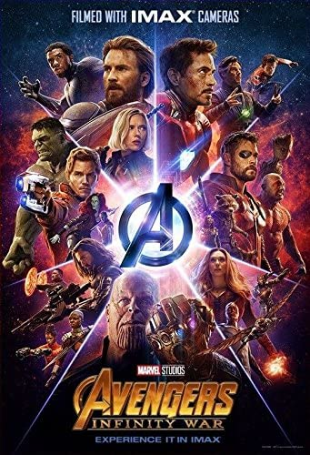

Месники: Війна Нескінченності» (англ. «Avengers: Infinity War») — американський супергеройський фільм, знятий братами Руссо за мотивами коміксів про однойменну команду видавництва Marvel. Він є продовженням фільмів кінематографічного всесвіту Marvel. Також він є продовженням фільмів «Месники» та « Ера Альтрона». Фільм був оголошений в жовтні 2014 року під назвою «Месники: Війна нескінченності - Частина 1». Фільм розпочав свій міжнародний прокат 25 квітня 2018 року, перш ніж вийти у США 27 квітня в IMAX та 3D. Прем'єра стрічки в Україні відбулась 26 квітня 2018 року.
«Месники: Війна нескінченності» зібрали $678,815,482 в США і Канаді і $,1,368,872,249 в решті світу, всього зібравши $,2,047,687,731. Картина зайняла четверту сходинку в списку найкасовіших стрічок всіх часів; першу за підсумками прокату 2018 року, серед фільмів Marvel і кінокоміксів в історії.

Заволодівши Каменем Сили з планети Зандар, Танос разом з Чорним Орденом нападає на космічний корабель, в якому знаходяться Тор, його брат Локі, Халк, Геймдал і асгардійці, що залишилися в живих після Раґнароку. Корабель подає сигнал лиха. Танос катує Тора і погрожує вбити його, якщо Локі не віддасть йому Камінь Простору. Халк нападає на Таноса, але той перемагає, навіть не використавши камінь сили. Локі віддає тесеракт, і лиходій знищує куб, витягує камінь і вставляє в рукавичку. Геймдал з останніх сил через Біфрост відправляє Халка до Землі попередити про загрозу, після чого гине від рук Таноса. Танос посилає Чорний Орден — Кула Обсидіана, Ебонове Воло, Корвуса Глейва і Проксіму Міднайт знайти два інших камені, які знаходяться на Землі. Він вбиває Локі на очах у Тора, після чого знищує корабель. Халк приземляється в храмі «Санктум Санкторум» в Нью-Йорк Сіті і перетворюється у Брюса Беннера. Він попереджає Доктора Стренджа і Вонга про те, що Танос прямує до Землі. Стрендж просить про допомогу Тоні Старка. Вонг розповідає Тоні про Камені Вічності — кристали, що володіють необмеженою силою і якими хоче заволодіти Танос. Вони знаходилися в різних куточках всесвіту: Камінь Душі у невідомому місці; Камінь Розуму (зі скіпетра Локі) розташований у лобі Віжена, Камінь Реальності у Колекціонера, а Камінь Часу знаходиться у Стренджа в Оці Агамото. У Нью-Йорк прилітає один з кораблів Таноса, на якому знаходяться Ебонове Воло і Кул Обсидіан. Воло, володіючи телекінетичними здібностями, намагається забрати у Стренджа Камінь Часу. Однак йому це не вдається, і він викрадає його разом з Оком Агамото. Старк і прибулий на допомогу Пітер Паркер борються з Обсидіаном, після чого потрапляють на корабель. Воло катує Стренджа, щоб той зняв захист із Каменю. Пітер в костюмі Залізного павука, разом з Тоні придумують план дій. Після того, як Залізна людина пробиває отвір у кораблі, чаклуна викидає у відкритий космос, де він гине. Беннер зв'язується зі Стівом Роджерсом, який знає місцезнаходження Віжена, а Вонг залишається охороняти Санктум Санторум. Віжен зі своєю коханою, Вандою Максимофф, знаходяться в Шотландії. На них нападають Глейв і Проксіма і намагаються витягнути з його голови Камінь Розуму. Проте прибулі на допомогу Стів Роджерс, Сем Вілсон і Наташа Романофф відбивають напад, після чого вони направляються до Джеймса Роудса на базу Месників. Віжен пропонує знищити камінь, тим самим порушивши план Таноса, однак це призведе до його загибелі. Беннер робить висновок про те, що є спосіб, при якому андроїд виживе. Вони вирішують звернутись до високорозвинених технологій Ваканди. Вартові Галактики отримують сигнал лиха, після чого знаходять уламки корабля, зруйнованого Таносом, а також рятують Тора. Ґамора розповідає йому, що її батько з допомогою каменів збирається знищити половину мешканців всесвіту, щоб захистити її від перенаселення і зберегти рівновагу. Якщо Танос вставить всі шість каменів у свою Рукавичку Нескінченності, то здійснить свій план, клацнувши пальцями. Тор припускає, що тепер мета Таноса — Камінь Реальності, який знаходиться у Колекціонера на Ніденії. Оскільки Тору треба нову зброю для боротьби з титаном замість втраченого молота, він разом з Ракетою і Грутом летить на Нідавелір (тільки Ракета чув про це місце, тому Тор вирішив взяти його з собою). У свою чергу Пітер Квілл, Ґамора, Дрекс і Богомолиця відправляються на Ніденію і виявляють, що Танос вже заволодів Каменем Реальності. Танос викрадає Ґамору, яка розкриває місцезнаходження Каменя Душі, щоб позбавити свою зведену сестру Небулу від тортур. Вони відправляються на планету Вормір, де Танос дізнається від Червоного Черепа, що повинен принести в жертву людину, яку любить, щоб дістатися до Каменя Душі. Зі сльозами на очах він жертвує Ґаморою і таким чином отримує камінь. Небула тікає з полону і просить Вартових зустріти її на Титані, батьківщині Таноса. Корабель Вола з Тоні, Пітером і Стренджем на борту прибуває туди ж. Приземлившись на Титані, вони зустрічають Зоряного Лорда, Дрекса і Богомолицю, після чого між ними розгортається бій (Вартові вважають Месників за прибічників Таноса), але непорозуміння вдається владнати, після чого герої почали розробляти план дій. Стрендж, використовуючи Камінь Часу, бачить 14 000 625 варіантів битви, з яких Танос програє лише в одному. Коли Танос прибуває на Титан, його зустрічає Стрендж, поки всі інші сховалися за планом. Танос пояснює свої плани бажанням забезпечити виживання Всесвіту, якому загрожує загибель. Починається битва і героям, спільними зусиллями, вдається знерухомити Таноса. У них майже виходить зняти рукавичку, однак коли стає відомо, що Танос вбив Ґамору, Пітер в гніві починає бити лиходія, тим самим виводячи його з-під контролю Богомолиці і він отямлюється. Танос легко перемагає кожного з них, а опісля сильно ранить Залізну людину. Погрожуючи вбити, він змушує Стренджа віддати Камінь Часу, тим самим зберігши життя Старку. Тим часом Тор дістався до Нідавеліра, але зірка, необхідна для виготовлення зброї, згасла. Гном Ейтрі розповідає, як одного разу Танос атакував кузню і змусив викувати йому Рукавичку Нескінченності. Тор з допомогою Ракети власноруч запускає плавильну піч, однак енергія зірки майже вбиває його. Ейтрі робить для Тора нову зброю — сокиру Каменеборець, а Ґрут жертвує руку для руків'я. Після прибуття в Ваканду Роджерс зустрічається з Бакі Барнсом, який отримав новий протез від короля Т'чали. Сестра Т'чали, Шурі починає витягувати камінь з голови Віжена, щоб Ванда змогла його знищити. Вторгається армія Таноса, і Месники борються з нею разом із силами Ваканди. Беннер, не в змозі перетворитися на Халка, б'ється в броні Старка — «Халкбастері». Тор, Ракета і Ґрут прибувають на землю (Каменеборець здатний відкрити Біфрост) і згуртовують захисників. Ванда разом з Чорною Вдовою і Окойє вбивають Проксіму, Бенер з допомогою «Халкбастера» вбиває Обсидіана, а Капітан Америка і Віжен — Корвуса. Прибуває Танос, і Віжен нагадує Червоній Відьмі про обіцянку знищити камінь в його голові, щоб він не потрапив в руки Таноса. Танос із легкістю перемагає усіх, хто вирішив захищати Ванду. Вона успішно справляється із завданням, але Танос повертає час назад, відновлює Віжена, а після вириває артефакт з його голови, вбиваючи його. Після того, як Танос поміщає останній камінь у рукавичку, на нього нападає Тор і ранить в груди. Але Танос робить клацання пальцями і телепортується. Незабаром Бакі перетворюється в пил і зникає. Те ж саме відбувається послідовно з Т'чалою, Вандою, Соколом і Ґрутом. В цей же час на Титані також перетворюються в пил Дрекс, Богомолиця, Пітер Квілл і Доктор Стрендж. Старк намагається заспокоїти Пітера, обіцяючи йому, що все буде добре, але і він розпадається. У живих на планеті залишаються тільки Залізна Людина і Небула, яка повідомляє, що Танос все-таки здійснив свій план і стер половину населення всесвіту. У Ваканді Стів Роджерс, усвідомивши, що накоїв Титан, вимовляє лише одну фразу: «Боже мій...». Танос переміщається на невідому мирну планету, де нарешті, відпочиває, після скоєного.
У сцені після титрів Нік Ф'юрі і Марія Гіл стають свідками хаосу на вулицях Нью-Йорка через зникнення половини землян. На очах у Ф'юрі Гіл розсипається в пил. Нік також починає розлітатись на пил, однак встигає включити секретний пейджер. В останніх кадрах видно екран пристрою, на якому йде процес передачі повідомлення, а потім на весь екран розгортається емблема Капітана Марвел.
На сайті Rotten Tomatoes рейтинг складає 84% з середнім балом 7,5 з 10, на основі 396 рецензій.
На Metacritic – 68 балів зі 100 на основі 53 рецензій.
«Людина-павук: Повернення додому» (2017)
«Месники: Війна нескінченності» (2018)
«Людина-павук: Далеко від дому» (2019)